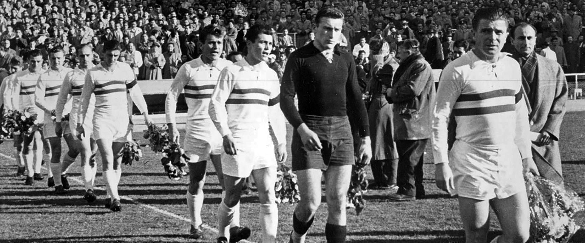

Bevezetés
A Budapest Honvéd FC Magyarország egyik legismertebb labdarúgócsapata Budapest XIX. kerületéből. A kispesti klub jelenleg a magyar labdarúgó-bajnokság második osztályában szerepel. Az egyesületet 1909-ben Kispesti AC néven hozták létre, majd 1926-ban a Kispest FC nevet vette fel, és 1944-ben egy rövid ideig másodszor is az alapításkori nevét használta. A csapat több mint egy évszázados története során 1916-tól kezdődött az első osztályú menetelés, melyet 2003-ban egy idényre másodosztályú szereplés szakított meg.

Története
Kezdeti nehéz idők
Már 1904 elején felbukkant egy-egy kezdeményezés Kispesten a labdarúgás meghonosítására. A Kispesti Sport Club néven megalakult sportegyesület diákokból álló csapatát benevezték az Ifjúsági Labdarúgó Szövetségnél, ennél többet azonban nem tudni a klub sorsáról. Egy lelkes tanár dr. Varga Bálint kezdeményezésére az Éder vendéglőben alakította meg társaival a Kispesti Athletikai Club-ot 1908. augusztus 10-én. Az atlétika, torna és a vívás mellett kisebb vita után a labdarúgást is felvették a sportágak közé. Az elnök dr. Varga Bálint, a klub intézője Bede István a vívók, és Mayer Béla a labdarúgók részéről lett. Az alapszabályt azonban a tagok nem fogadták el, Varga Bálint megsértődött és lemondott. Az egyesület ügyeit egy évig Bede István intézte, aki elsősorban a teremsportokat favorizálta. A vita egyre élesedett a két párt között, ráadásul az anyagi nehézségek is gyötörték a klubot. Ennek enyhítésére 1909. február 1-jén KAC bált rendeztek, melynek bevételének (100 korona) elosztása újabb vitát kavart. 1909 tavaszán beindult a labdarúgó élet a Katona réten (a Fő u. és a Batthyány u. közötti grund). Az első nem hivatalos mérkőzések Erzsébetfalva, Lőrinc, Rákosliget és Rákoscsaba csapatai ellen voltak. A két párt közötti ellentéteket a két mecénás, Schmoch Károly és Szűcs László próbálta elsimítani, nem sok sikerrel. 1909 júliusában a felbomlás veszélye fenyegette a KAC-ot. A sok belső vita miatt elhagyta az egyesületet Szűcs László alelnök és Krausz Jenő, a labdarúgó szakosztály vezetője is. 1909. augusztus 3-án, majdnem egy évvel az első kezdeményezés után a tisztújító választmányi gyűlésen végleg megalakult a Kispesti Atlétikai Club nyolc szakosztállyal (atlétika, birkózás, kerékpár, ökölvívás, tenisz, torna, vívás és labdarúgás). A közgyűlésen a régi emberek kerültek a vezetőségbe, az elnöki hely pedig betöltetlen maradt.
Jó folytatás
1909. december 10-én az MLSZ felvette tagjai közé a KAC-ot. Az első barátságos mérkőzést a Magyar AC tartalék ellen játszotta a Kispest, melyet 5:0-ra elvesztett. Az MLSZ a csapatot a Pestvidéki Bajnokságba sorolta be, amely 1909. szeptember közepén indult és kétfordulós volt. Ez volt a Kispest első hivatalos bajnoksága. Az első mérkőzés győzelemmel végződött... 1909. szeptember 19-én Monoron 3:1-re nyert a csapat. A következő mérkőzést, Pesterzsébeten, a későbbi bajnok Erzsébetfalvi TC nyerte 4:1-re.
1910 őszén az MLSZ létre hozta a IV. osztályú bajnokságot. Miután Kispestet a budapesti kerülethez csatolták, benevezett a bajnokságba. A nevezés késve érkezett, mivel a Kispest addig a vidékhez tartozott. A KAC nem tehetett a késésről és a többi egyesület sem ellenezte az indulását, így a Labdarúgó-szövetség elfogadta a jelentkezést. Az 1910–11. évi bajnokságban meglepetésre a 2. helyen végzett, a Budapesti Testgyakorlók Köre mögött.
Komoly változások és az első bajnoki cím

Az 1911-es év komoly változásokat hozott az egyesület életében. Kispest egyik leggazdagabb polgára, Csimár Károly építész lett a KAC elnöke és rögtön 1000 koronát adományozott a klubnak. Ez akkoriban rendkívüli segítség volt a szegény KAC számára. Az 1911–12. évi III. osztályú bajnokságban a 8. helyen végzett a Kispest. Ebben az évben játszotta első nemzetközi mérkőzését Brünnben, melyet 2:1-re megnyert az FC Brünn ellen.
1913-ban ünnepelte a csapat az első bajnoki címét a III. osztályban. Ugyanebben az évben került átadásra az egyesület saját pályája a Sárkány utcában, melyet az ellenfelek stílszerűen később "sárkánybarlangnak" neveztek el.
Az 1913–14-es bajnoki évben a labdarúgás népszerűségének nagymérvű növekedése, a sportág rohamos térhódítása a budapesti egyesületek létszámát 55-ről 71-re gyarapította. Ezért az MLSZ kénytelen volt átszervezni a bajnokságot. Az MLSZ - a sok bevonulás, és nem utolsósorban az egyesületek között is kitört kisebbfajta háborúskodások miatt is - kénytelen volt a bajnokságokat ideiglenesen szüneteltetni és a különböző díjmérkőzések megrendezését és lebonyolítását az egyesületekre bízta. Az MTK vezette tábor (az igazságpártiak) a Hungária-serlegért játszott, az FTC köré tömörült békepártiak pedig az Auguszta-serlegért. 1915 tavaszán - a két tábor megbékélése után - az egyfordulós Amatőr Liga bajnokságot írták ki, 14 résztvevővel. A Kispestnek a II. osztály következett volna, de érthetetlen módon a Pestkörnyéki Serleg bajnokságba osztotta be a szövetség, ahol a 2. helyet szerezte meg. Mivel abban az időben az MLSZ elég fejetlenül működött és állandóan átszervezte a bajnokságot, nem keltett meglepetést, hogy a következő évben úgy került a KAC az első osztályba, hogy egyetlenegyszer sem játszott a második vonalban.
1914 nyarán kitört a világháború, emiatt nem indult el a bajnokság. Helyette a legjobb csapatoknak az MLSZ kiírta az Auguszta Serleget. Az ekkor lejátszott mérkőzéseken a KAC a 4. helyet szerezte meg. A mozgósításkor a KAC teljes első csapatát elvesztette. Katonai szolgálatra vonult be Novák, Kollarik, Simon, Szabó, Kincs, Kiliti, Boldog, Jurcsó II., Schiller II., Kónya és Papek. Csak Krausz Jenő intéző óriási munkájának köszönhető, hogy a csapat nem züllött szét.
1915 őszén 4. lett a kispesti csapat.
1916. szeptember 13-án lejátszotta első NB I-es bajnoki mérkőzését a KAC Kispesten, a Sárkány utcában. Ennek eredménye:
Kispesti AC – III. Kerületi TVE 0:3
Az NB 1-ben
1919–1920. Szenzációsan kezdett a Kispest. A 7. fordulóig 100%-os teljesítményt nyújtott a KAC. A bajnokság végén nagy meglepetésre 2. helyen végzett a gárda.
A bajnokság ezüstérmes csapata:
Varga, Saguly (Krebsz), Túri, Budai, Blasnik (Tóth), Stallmach, Boldog (Norik), Kiszely (Csontos), Jeszmás, Eisenhoffer, Jeny, Rudolf.
1921 végén kirobbant a kispesti profi per. A nagy szegénység miatt a játékosok ruhákat, cipőket és egyéb dolgokat fogadtak el, és ez bűn volt akkor. Feljelentés következtében – habár minden csapat ugyanezt cselekedte – megindult az a bizonyos profi per, amely aztán tönkretette ezt a sokra hivatott csapatot. A legjobb játékosokat eltiltották, majd a nagy egyesületek elvitték őket. Így került el többek között Kispestről Csontos, Jeszmás, Jeny és Eisenhoffer.[4]
Azonban – ékes példa a maiaknak – az egyesület megmutatta, hogy nem lehet eltiporni, a kispesti akarat legyőzhetetlen.
1926 decembere arany betűkkel íratik be az egyesület történelemkönyvébe. Megismételt mérkőzésen – 1:1 volt az első derbi – a kispesti fiúk 160 perces ádáz küzdelemben legyőzték a BEAC-ot 3:2-re, és elnyerték a Magyar labdarúgókupát.
Új korszak
Az 1926-os bajnoki szezon végével lezárult egy korszak a magyar labdarúgás történetében. Véget ért az amatőr, vagy inkább ál-amatőr korszak. A harmincas évek eleji gazdasági válság tovább súlyosbította a magyar labdarúgás helyzetét is, amely egyrészt újabb adókban, másrészt az ál-amatörizmus veszélyes formájában mutatkozott meg. Siettette ezt a folyamatot az a tény is, hogy a szomszédos osztrákok – Európában elsőként – már 1925 őszén bevezették a professzionizmust. Az MLSZ – tanulmányozva az osztrák labdarúgás helyzetét – kimondta: átszervezik a magyar labdarúgást és ők is bevezetik a professzionizmust. 1926 nyarán megtörtént a szétválasztás, s ezzel a magyar labdarúgás szervezetének átalakítása is. A megalakult profi egyesületek két ligába tömörültek, a többi amatőrcsapat Budapesten és vidéken a kerületi bajnokságért játszott különböző csoportokban.
1938-ban először indult a Kispest a Közép-európai Kupában. Ellenfele az Internazionale (akkori nevén Ambrosiana).
Milánóban: AS Ambrosiana Inter - Kispest FC 4:2 (0:2)
Budapesten: Kispest FC - AS Ambrosiana Inter 1:1 (0:1)
Bár a csapat kiesett mégis dicséret illette a helytállásért.
1940–41. A Magyar labdarúgókupa elődöntőjéig jutott a gárda.
1944-ben a Nagyváradi AC és a Gamma legyőzése után, a Szent László kupa döntőjében még a Fradi sem tudta megállítani a Kispestet. A győzelem értékét növeli, hogy az Üllői úton győzték le a zöldeket.
A kupagyőztes csapat:
Mindszenti, Olajkár I., Perjési, Bozsik, Gazdag, Zalai, Egresi, Béres, Nemes, Mészáros, Puskás. Edző: id. Puskás Ferenc.
1946–47-ben kialakul a jövő nagy Honvéd-csapatának gerince: a
Kiss Mihály – Szalay István (Sipos I), Herédi (Rákóczi) – Bozsik, Patyi, Bányai (Simonyi) – Béres (Cserjés), Budai I, Mészáros, Puskás, Babolcsay'
összeállítású csapat a 2. helyen végzett.
A második aranykorszak
1980-ban eljött a honvéd szurkolók által régen várt bajnoki cím. 25 évet kellett nekik erre a sikerre várni. A csapat trénere a legendás Tichy Lajos volt. A későbbi sikereket is az ő ekkori munkája alapozta meg.
A bajnok Bp. Honvéd SE játékosai:
Gujdár Sándor - Paróczai Sándor, Kocsis István, Garaba Imre, Varga József - Gyimesi László, Dajka László, Nagy Antal - Bodonyi Béla, Weimper István, Kozma Mihály.
Játszott még: Pál József, Lukács Sándor, Esterházy Márton, Menyhárt Kálmán, Pintér Sándor, Gőgicz József, Kotul László, Melis Béla.
A nyolcvanas éveket és az 1990-es évek elejét lehet a klub életében, a második aranykorszaknak tekinteni. Előbb Komora Imre vezérletével 3 bajnoki arany és egy kupagyőzelem gazdagította a kincsestárat. Ennek az időszaknak a meghatározó játékosai Andrusch József, Sallai Sándor, Nagy Antal, Garaba Imre, Varga József, Gyimesi László, Sikesdi Gábor, Détári Lajos, Dajka László, Bodonyi Béla, Esterházy Márton, majd az ifjúsági Európa-bajnok Kovács Kálmán voltak. 1988–89-ben Bicskei Bertalan vezetésével két bajnoki aranynak és egy kupa sikernek örülhettek. Ezután egy hullámvölgy következett, még a kiesés szele is megérintette a csapatot, hiszen az osztályozón majdnem kipottyant az első osztályból. A következő évben azonban újra a csúcson volt a csapat, ezúttal Mezey György vezérletével. A BEK-ből a kor egyik legjobb csapata az olasz UC Sampdoria búcsúztatta a csapatot. Kispesten 2-1 re verte a magyar csapat a taljánokat, a visszavágón, Genovában azonban 3-1-es vereséget szenvedett. Hosszú ideig (2017-ig) utolsó bajnoki címét 1993-ban egy finn mesternek, Martti Kuuselának köszönheti a gárda. Ekkor Illés Béla, Halmai Gábor és Vincze István voltak a meghatározó játékosok. A BEK-ben viszont ismét nagy halat sikerült kifognia a Honvédnak, ezúttal a Manchester United állta el az utat.
A centenárium után
2010-11-es szezonban a 2010. november 5-én a Győr elleni 1-1-re végződött hazai mérkőzés után Morales azt nyilatkozta, hogy „Nagy gondok vannak a klubnál. Egy ideig tartható ez az állapot, aztán lépnie kell az egyesületnek.”[6] A következő fordulóban az Újpesten elszenvedett 3-1-es vereség után az olasz szakember bejelentette távozását.[7] A vezetőedző újra Supka Attila lett, de a csapat nem volt meggyőző és végül a tizedik helyen végeztek.
A 2011–2012-es idényben az előkelőnek mondható negyedik helyen zártak és a Győri ETO FC kizárása miatt még az Európa Liga selejtezőjében is indulhattak.[8] Az Európa Ligában az albán KS Flamurtari Vlorë csapatán könnyedén továbbjutva[9][10] a világsztárokkal teletűzdelt FK Anzsi Mahacskala jelentette a befejezést.
Új edzővel az olasz Marco Rossival kezdett a csapat a 2012-13-as szezonban és sikeresen indult az évad, hiszen két győzelemmel rajtolt a BFC Siófok és a Diósgyőri VTK ellen.[12] A nagy riválisok közül legyőzte a Videoton FC-t és a Ferencvárosi TC-t, mely azt eredményezte, hogy egy ideig vezették a tabellát, de utána visszaesés jött és végül az ötödik helyen végeztek az őszi szezonban. A kupában a negyedik fordulón is túl jutottak, hiszen a DVTK ellen két győzelemmel (4-0 és 2-1) magabiztosan meneteltek a negyeddöntőbe, ahol aztán a Győri ETO FC ellen két vereségbe is belefutottak (0-1 és 0-2).[13][14]
A tavaszi szezonban nagy küzdelemben, időnként meggyőző játékkal a riválisok előtt mindössze egypontos előnnyel szerezték meg a harmadik helyet. Ezzel a bravúros teljesítménnyel egymás után másodszorra is kivívták a Európa-ligában a szereplést.[15] A sikereket azonban kisebb visszaesés követte. A nemzetközi kupaszereplést gyorsan befejezte a csapat és a bajnokságban sem szerepeltek jól. 2014 áprilisában lemondott Marco Rossi vezetőedző, hiszen tavasszal öt egymás utáni bajnokit vesztettek el.[16] A Honvéd kilenc hónapig bírta Rossi nélkül, ez idő alatt továbbra gyengélkedtek és a bajnoki helyezéseket tekintve inkább a kiesés ellen küzdöttek. 2015 februárjától aztán visszatért Rossi és lépésről-lépésre feljavultak. A 2016–2017-es magyar labdarúgó-bajnokságban 24 év után ismét bajnok lett a csapat.[17] 2017. május 27-én, a bajnoki cím megszerzését követően Rossi ismét lemondott. Az új vezetőedző a holland Erik van der Meer lett.[18]
A 2017–2018-as szezonban nem tudott dobogóra állni a csapat, de a negyedik hely azt jelentette, hogy nemzetközi kupaküzdelmekben elindulhattak. A jó nemzetközi szereplés nem sikerült, de a 2018–2019-es szezonra több saját nevelésű játékossal és új igazolásokkal sokkal jobb formát mutat a csapat és a dobogós helyezésért küzdenek. Külön klubsiker, hogy 2018 novemberében a finnek elleni győztes Nemzetek Ligája találkozón Holender Filip bemutatkozott a magyar labdarúgó válogatottban így ő lett a klub 100. válogatott játékosa.[19] Jelentős előrelépés lehet az utánpótlásnevelésben, hogy 2018. november 22-én Orbán Viktor miniszterelnök és George F. Hemingway, a klub tulajdonosa hivatalosan átadta a Budapest Honvéd FC-Magyar Futball Akadémia Utánpótlásközpontot, ami 4.2 milliárd forintos beruházásból épített korszerű sportcentrum.[20]
2019. április 8-án hivatalossá vált, hogy George F. Hemingway eladta százszázalékos üzletrészét a Reditus Equity Zrt-nek.[21]
A 2019-2020-as szezonban megszerezte nyolcadik kupagyőzelmét is a csapat, miután a Pisont István vezette együttes 2–1-re legyőzte a Mezőkövesd csapatát a döntőben.[22]
A 2022-2023-as idény végén a Honvéd csak a 11. helyen végzett a bajnokságban, így 20 év után búcsúzott az élvonaltól.
Sikerek
Hazai sikerek
Magyar bajnokság
14 aranyérem – 1949–50, 1950-ősz, 1952, 1954, 1955, 1979–80, 1983–84, 1984–85, 1985–86, 1987–88, 1988–89, 1990–91, 1992–93, 2016–17
12 ezüstérem – 1919–20, 1946–47, 1951, 1953, 1957–58, 1963 ősz, 1964, 1969, 1971–72, 1974–75, 1977–78, 1993–94
6 bronzérem – 1948–49, 1958–59, 1970 tavasz, 1982–83, 1991–92, 2012–2013
Magyar kupa
8 aranyérem – 1925–26, 1964, 1984–85, 1988–89, 1995–96, 2006–07, 2008–09, 2019–20
11 ezüstérem – 1954–55, 1968, 1969, 1972–73, 1982–83, 1987–88, 1989–90, 1993–94, 2003–04, 2007–08, 2018-19
1 bronzérem – 1980–81

Szurkolók
Már az 1920-as évekből vannak feljegyzések, miszerint azért kellett elvinni semleges pályára egy meccset, mert az ellenfél nem akart a hangos, lelkes kispesti közönség előtt játszani, mert ezzel akár befolyásolni tudták a bírót. A rendszerváltás idején végzett statisztikai elemzések szerint a Honvéd szurkoló tábora volt a negyedik legnagyobb Magyarországon.[4] A csapatnak napjainkban körülbelül 80-90 000 szurkolója van és ezzel a magyar klubok között az 5-7. helyre sorolható.[30]
Magyarország első ultra csoportja a kispesti Ultra Red Boys, mely 1991 novemberében alakult meg. Érdekesség, hogy mikor a csapat nem mutatott jó teljesítményt, de a szurkolótábor az nem fogyatkozott ezzel párhuzamosan. 2005-ben szurkolók és a klub volt játékosai megalapították a Kispesti Labdarúgásért Támogató Egyesületet. Ez a szervezet a kispesti labdarúgás támogatását, a klub szimpatizánsainak és szurkolói csoportjainak összefogását tűzte ki fő céljának. 2014-ben egyedi módon a klubtól függetlenül létrehozták a Kispesti Futball Házat, ahol állandó kiállítás formájában megtekinthető a Budapest Honvéd FC és jogelődjeinek sporttörténeti gyűjteménye.
Ultra Red Boys (1991–)[33]
A csoport 1991-ben alakult, Magyarországon elsőként. Már az elején úgy határoztak, hogy nem akarnak mindenáron nagy létszámú csoportot, kb. 10-15 fő volt a létszám, és hasonló a helyzet napjainkban is. Úgy próbáltak működni, mint bármely másik ultra csoport, és a fejlődés időről időre tapasztalható is volt. Bár a nagy magyar csoportalapítási láznak köszönhetően egy kis törés mutatkozott, rövidesen helyreállt a rend és azóta tulajdonképpen változatlan összeállításban látogatják a stadionokat.
KHO (2003–)[34]
A csoport 2003 márciusában alakult 10 fővel. A KHO névkombináció egyrészt jelenti az alakulás körülményeit, hiszen olyan Kispest-szurkolók hívták életre a csoportot, akik egy internetes chatszobában ismerkedtek meg. A KHO mozaikszó a Kispest Honvéd Online rövidítést takarja. A KHO nem ultra csoport. Ugyanakkor a többi ultra csoporttal együttműködik, székhelyük is az Északi Kanyar. Az elmúlt években a Kispest összes külföldi fellépésén megjelentek, és elmondható, hogy 2003 óta nem rendeztek olyan Kispest-meccset ahol ne képviseltették volna magukat.
Stadion
A Kispesti AC első sporttelepe a Sárkány utca végén épült. A telket a város adományozta, a sporttelepet a kispesti kisiparosok és kereskedők, elsősorban Polacsek Ferenc szállodatulajdonos és Herbacsek Ferenc fakereskedő hathatós anyagi segítségével építették fel. A létesítményt 1913-ban adták át, melyet az ellenfelek találóan sárkánybarlang becenéven emlegettek. Az első modernizálási beruházásra 1927-ben került sor, azonban a falelátó és az épületek 1934-ben leégtek.[40]
1938. január 2-án vasárnap avatták fel a Kispesti AC új sporttelepét jelenlegi helyén. Az új aréna 8000 néző befogadására volt alkalmas, 5000 ülő- és 3000 állóhellyel rendelkezett. Az öltözők már korszerűek voltak, hideg-meleg vizes tisztálkodási lehetőséggel.
1939. február 12-ére a tribünt kibővítették, a pályát már gyepszőnyeg borította. A felújítás után 1955-ben bővítés és átalakítás következett. A mindenkori nézőcsúcs is ez időben született 1957. 08. 24-én a Bp. Honvéd - Tatabányai Bányász 1:2 mérkőzést 30 000 néző látta.[41]
1967. május 20-án a Szombathelyi Haladás elleni barátságos labdarúgó-mérkőzésen avatták fel a villanyvilágítást és az új, kibővített tribünt.
2006 szeptemberében a centerpálya új vízelvezető és automata-öntözőrendszert, valamint új gyepszőnyeget kapott, 5500 piros-fekete műanyag széket szereltek fel a korszerűsített lelátóra. Felújították a sajtóhelyet, kondicionáló termet építettek, a hangosítást, az eredményjelzőt és a megvilágosítást modernizálták.
A stadion 1986. október 1-je óta viseli a Bozsik Stadion nevet, névadója a magyar válogatottsági csúcstartó Bozsik József. A stadionnak 2018.09.22-én volt a búcsúztatója.